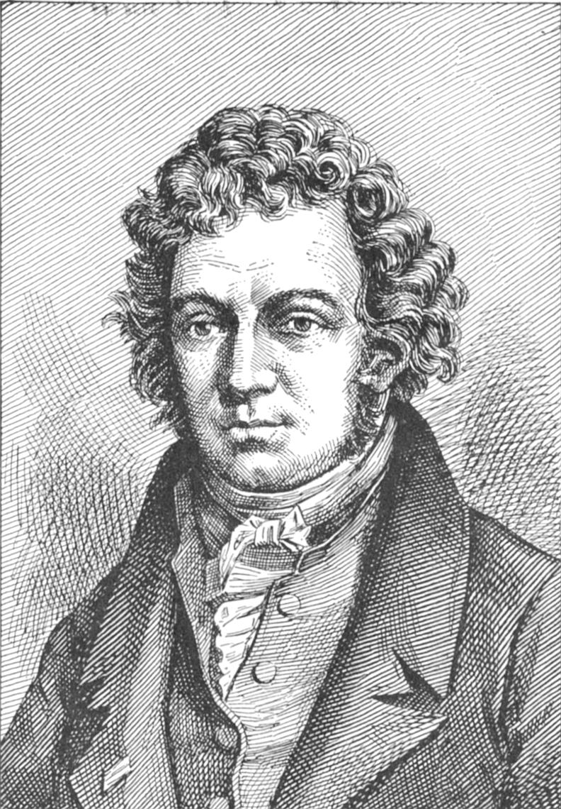

Слово «кибернетика» происходит от греческого «кюбернетес», что первоначально означало «рулевой», «кормчий», но впоследствии стало обозначать и «правитель над людьми».
Так,древнегреческий философ Платон в своих сочинениях в одних случаях называет кибернетикой искусство управления кораблем или колесницей, а в других — искусство править людьми.
Заметим, что греческое слово κοβερνω (гиберно) означает губернию — административную единицу, населенную людьми, a κοβερνετ (гибернет), или по- русски, губернатор, — управляющий ресурсами и людьми,населяющими его губернию. Но слово κοβερνω для греков означало нечто большее, чем «губерния». Гиберно — это объект управления, содержащий людей. Воинская часть — это гиберно. А вот корабль сам по себе как некоторая техническая система уже не гиберно, и лоцман не гибернет. Корабль же с командой и пассажирами — это гиберно, и его капитан, который не только ведет корабль, но и управляет командой и пассажирами, является гибернетом.

Французский ученый А. М. Ампер в своей работе «Опыт о философии наук, или Аналитическое изложение естественной классификации всех человеческих знаний» назвал кибернетикой науку о текущем управлении государством или народом. В 1834 году в своей книге он написал, что кибернетика помогает правительству решать встающие перед ним конкретные задачи при учете разнообразных обстоятельств, а также в свете общей задачи, значение которой принести стране мир и процветание. Тем не менее, термин «кибернетика» вскоре забыли. Возродили его лишь в 1948 году. Сделал это Винер в качестве названия науки, которая управляет техническими, биологическими и социальными системами.
Сейчас мы говорим, что информатика, выросшая из кибернетики, представляет собой совокупность научных направлений, изучающих общие свойства информации, методы и средства ее создания, хранения и передачи.
Для абитуриентов,
подбирающих специальность для дальнейшего изучения в университете. Осведомление о будущих профессиональных навыках, изучаемых дисциплин в будущем :)